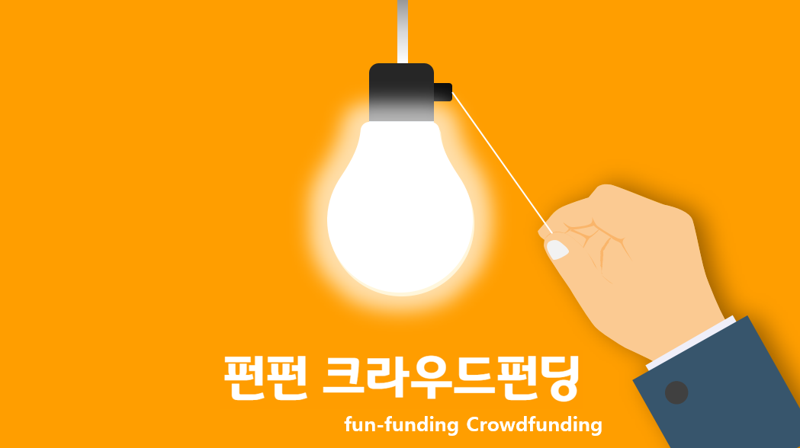
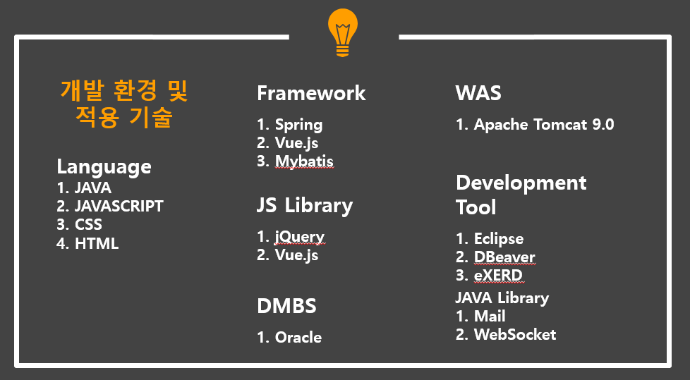
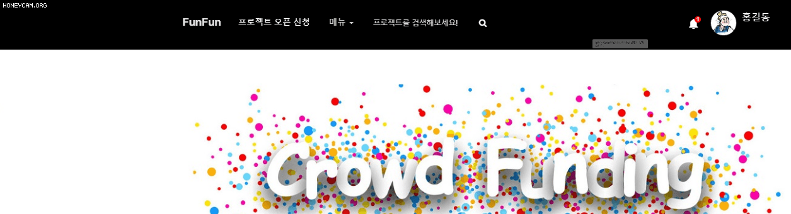

프로젝트 소개

크라우드 펀딩 플랫폼인 Wadiz를 참고하여 제작하였습니다.
저희가 제작한 플랫폼에서는 -
1. 아이디어를 등록하여 다른 사용자로부터 자금을 후원 받습니다.
2. 후원금이 목표금액에 도달하면 리워드라는 이름의 보상을 후원자에게 제공합니다.
3. 후원금이 달성된 경우 플랫폼 내 스토어에 등록하여 판매까지 이어질 수 있습니다.
개발환경 및 사용기술

1. 웹애플리케이션 서버는 톰캣을 사용하였습니다.
2. 스프링을 사용하여 MVC패턴으로 컨트롤러, 서비스 단을 분리하여 구현하였고 뷰는 JSP를 사용하였습니다.
3. 웹페이지 제작에는 자바스크립트, CSS를 기본적으로 사용하고 제이쿼리, 부트스트랩, Vue.js도 사용하였습니다.
4. 데이터베이스 오라클(11g 버전)을 사용하였고 E-R diagram 제작에는 eXERD를 사용하였습니다.
5. 마이바티스를 사용하여 매퍼 내에 쿼리문을 작성하여 데이터베이스의 정보를 가져왔습니다.
담당 파트
1. 메인 페이지.
2. 로그인 페이지.
3. 회원가입 페이지.
4. 아이디/비밀번호 찾기 페이지.
구현 내용
1. 메인 페이지
1. 스크롤링을 통한 페이징을 구현

1-1. AJAX와 Vue.js를 활용하여 화면의 스크롤을 끝까지 내렸을 때 리스트가 출력되도록 구현하였습니다.
1-2. javascript의 InterceptionObserver 객체를 사용하여 이미지가 화면에 보이는 순서대로 로딩되도록 구현하였습니다.

1-3. 로그인 상태인 경우는 사용자의 관심 카테고리 정보를 사용하여 해당 카테고리에 속하는 리스트만을 출력하도록 구현하였습니다.
2. AJAX 및 소켓통신을 통한 알림기능 구현

2-1. 페이지 로드 이후 초기 알림 정보를 수신할 때는 세션에 저장된 유저 정보를 이용하여 AJAX를 통해 업데이트하도록 구현하였습니다.
2-2. 알림 정보는 내가 문의한 내용에 답변이 달린 경우 업데이트 되도록 구현하였습니다.
2-3. 해당 알림을 클릭하면 내가 문의한 내용으로 이동하도록 구현하였습니다.
2-4. 소켓 통신을 이용하여 페이지를 이동하지 않더라도 알림정보를 수신할 수 있도록 구현하였습니다.
2-5. 문의한 내용에 답변이 달린 경우 상단에 메시지가 팝업되며 알림의 개수가 +1 됩니다